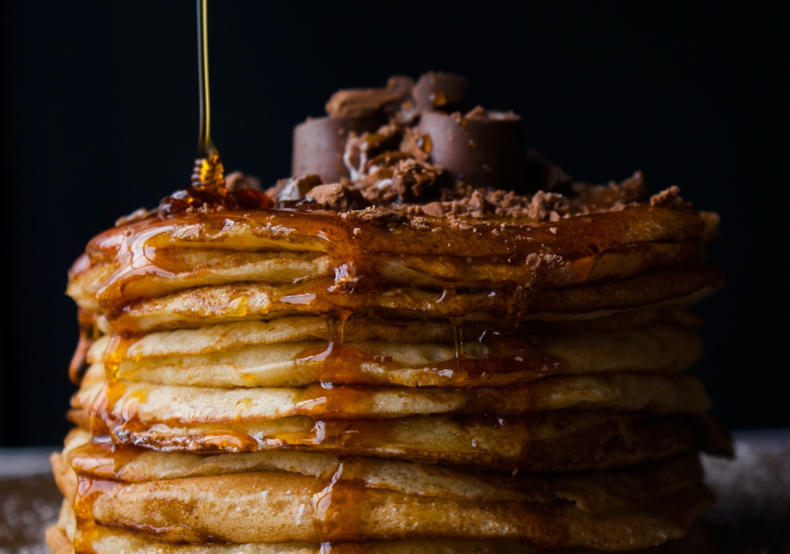

Pancakes
Zutaten
| 1 | Stk | Orange |
| 200 | ml | Orangensaft |
| 3 | Tl | Backpulver |
| 200 | g | Mehl |
| 250 | ml | Milch |
| 1 | EL | Zitronensaft |
| 1 | Pk. | Vanillezucker |
| 1 | Prise | Salz |
| 4 | KL.M | Eier |
| 2 | EL | Butterschmalz |
| Nährwerte pro 100g | |
|---|---|
| 219 | kcal |
| 28,6g | KH |
| 7g | Zucker |
| 9,4g | Fett |
| 6,1g | Protein |
- Orange heiß waschen, die Schale dünn (ohne das Weiße) abschälen und in feine Streifen schneiden. Orangensaft und Ahornsirup in einem kleinen Topf erhitzen und bei starker Hitze auf die Hälfte einkochen. Beiseite stellen.
- Backpulver und Mehl mischen. Milch, Zitronensaft, Vanillezucker, 1 Prise Salz und Eier mit den Quirlen des Handrührers gut verrühren. Mehlmischung nach und nach zugeben und langsam glatt rühren.
- 1 El Butterschmalz in einer großen Pfanne erhitzen. 6 kleine Teigportionen in die Pfanne gießen und jeweils mit 1 Tl Orangenschalenstreifen bestreuen. Bei mittlerer Hitze von jeder Seite 3-4 Min. goldbraun braten. Aus der Pfanne nehmen, erneut 1 El Butterschmalz erhitzen und restliche Pfannkuchen ausbacken. Mit Orangensirup beträufeln.
Zubereitung:
Rezept erstellt von
 Peter
Peter